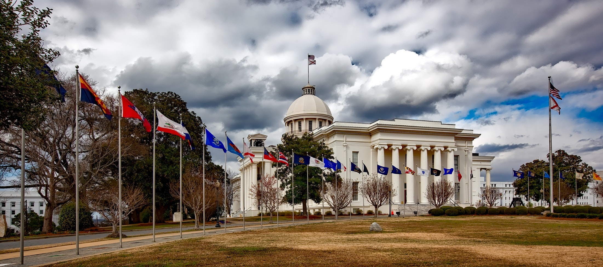

Politikk er aktivitet som går ut på å styre eller lede samfunnsutviklingen. Ettersom det er de statlige organer, eventuelt de tilsvarende organer på under- eller overnasjonalt nivå, som står for fastsettelsen av styringsinnholdet, vil politikk i praksis være den virksomhet som skjer i tilknytning til statsorganene. Kort kan man derfor si at politikk gjelder samspillet mellom staten og det øvrige samfunn, eventuelt også samspillet mellom ulike stater (internasjonal politikk); se politisk system. Studiet av politikk kalles av denne grunn ofte statsvitenskap. Ofte knyttes ulike forstavelser til ordet «politikk». Det snakkes for eksempel om partipolitikk eller industripolitikk. Partipolitikk refererer til aktivitet rettet mot utformingen av offentlig politikk – her dreier det seg om en kanalisering av påvirkning fra samfunnet til staten. Industripolitikk, eller sosialpolitikk, utdanningspolitikk og så videre, refererer til selve styringen – altså til statens forsøk på å påvirke samfunnet. På engelsk kalles ofte den første type aktivitet politics, mens den annen kalles policy.
